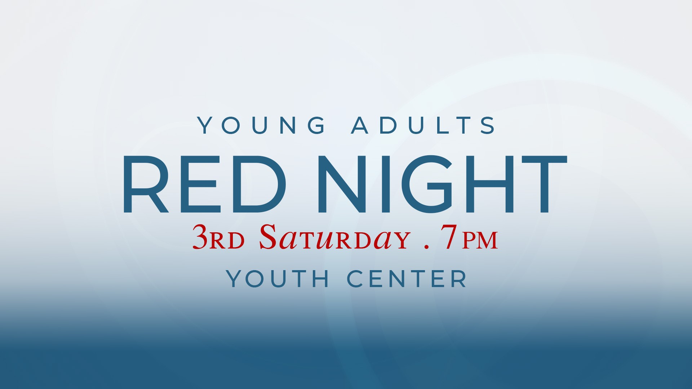

Every generation / KINGDOM LIFE
Life. Faith.
Together.
Young Adult Ministry
Build genuine community and grow in faith during college and early career.
THIRD SATURDAY · 7 PMYOUTH CENTER
03 / EVERY GENERATION
RED Night
Young adults meet on the third Saturday of every month - 7 PM at the Youth Center

04 / EVERY GENERATION
RISE Night
From games to small group conversations, we discuss who we are, who God is to us, and what our life goals are. Join us the 2nd & 4th Thursdays of every month - 7:30 PM at the Youth Center
05 / EVERY GENERATION
I will pour out my Spirit on all people.
Your sons and daughters will prophesy, your young men will see visions, your old men will dream dreams. Even on my servants, both men and women, I will pour out my Spirit in those days, and they will prophesy. // Acts 2:17-18
KEEP EXPLORING / KINGDOM LIFE